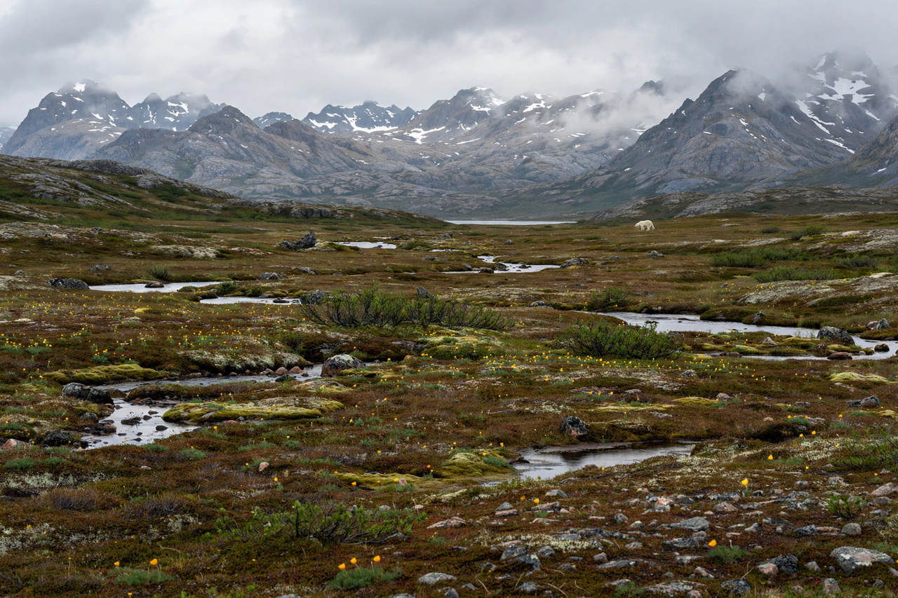

| Wrangel Island | |
|---|---|
| Native name | Умӄиԓир (Chukchi) |
| Location | Chukchi Sea / East Siberian Sea, Russian Far East |
| Coordinates | 71°14′N 179°24′W |
| Area | 7,600 km² (2,900 sq mi) |
| Highest point | Mount Sovetskaya, 1,096 m |
| Administration | Chukotka Autonomous Okrug, Russia |
| Status | Strict nature reserve (zapovednik); UNESCO World Heritage Site (2004) |

Wrangel Island (Russian: Остров Врангеля) is an island of the Chukotka Autonomous Okrug in the Russian Far East, lying in the Arctic Ocean between the Chukchi Sea and the East Siberian Sea. It is separated from the Siberian mainland by the Long Strait. The island is famous as the last known refuge of the woolly mammoth, which survived there until about 4,000 years ago — thousands of years after mainland populations vanished, and roughly contemporary with the building of the Egyptian pyramids. The entire island is a federal nature reserve, administered for the protection of its exceptional Arctic biodiversity.
Indigenous Chukchi knew the island long before Europeans sighted it; the Russian explorer Ferdinand von Wrangel, for whom it is named, searched for it in the 1820s after hearing Chukchi accounts but never reached it. It was sighted by Western whalers in 1867 and named by American captain Thomas Long. In 1914 survivors of the wrecked Canadian Arctic Expedition ship Karluk reached Wrangel and were rescued months later; a disastrous 1921 colonisation attempt led by Vilhjalmur Stefansson left all but one settler dead. The Soviet Union asserted control in the 1920s, relocating Chukchi families to the settlement of Ushakovskoye. The island was designated a nature reserve in 1976 and inscribed as a UNESCO World Heritage Site in 2004.
Wrangel Island covers about 7,600 km². Its interior is dominated by the Tsentralnye Mountains running east–west, rising to Mount Sovetskaya at 1,096 m. The climate is severe polar, with long dark winters, persistent winds and average July temperatures only a few degrees above freezing. Yet the island — which was never covered by a thick ice sheet during the last glaciation, forming part of Beringia — hosts an unusually rich tundra flora for its latitude, with around 400+ plant species and subspecies, roughly double that of comparable Arctic territories.
Wrangel is a major denning area for polar bears — sometimes called the "polar bear maternity ward" — and supports Pacific walrus haul-outs, reindeer (introduced in the 1940s–50s), musk oxen (introduced 1975), Arctic foxes, wolves, lemmings, and breeding colonies of snow geese and other migratory birds. The island's dwarf mammoths, the last on Earth, appear to have died out around 2000 BCE, possibly from a combination of genetic deterioration, freshwater scarcity and human arrival. Remains of Palaeo-Eskimo hunters, dated to about 3,500 years ago, have been found at Chertov Ovrag.